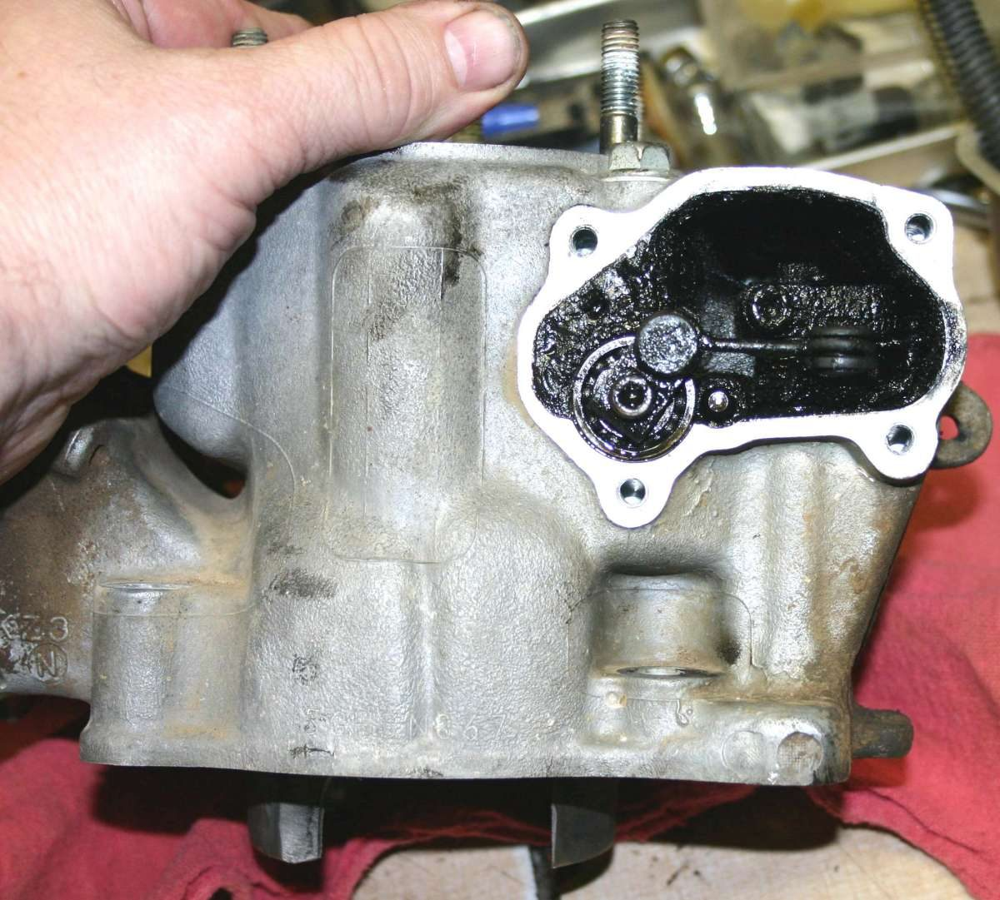
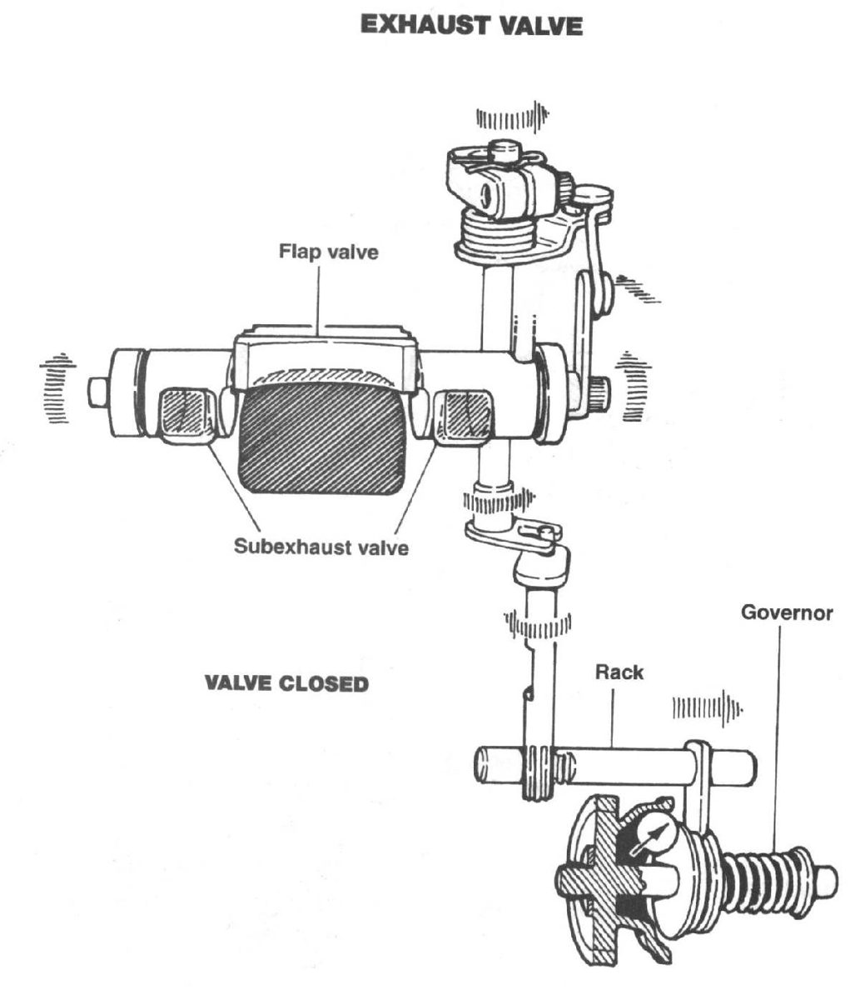
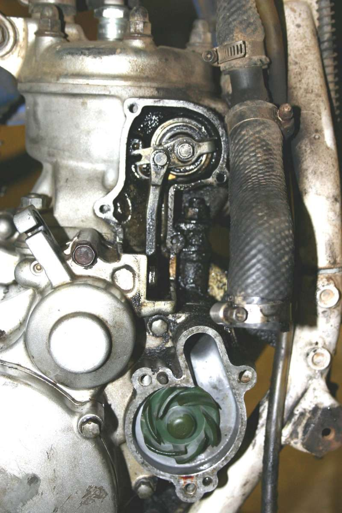

Many modern two-stroke engines have a power valve (also called an exhaust valve) in the exhaust port. It is a piece of metal that moves down to cover part of the port. A big port gives high power but a narrow power band. By making the port smaller at low revs, the valve keeps more fuel mixture in the cylinder and widens the band. It should be closed at low revs and open at high revs. Carbon builds up in it and in its linkage, so it needs regular cleaning and a correct setting.
Is this a rider job?
This is a workshop-level job. Makers use different linkages, governors and settings, and the parts are many. A shop manual is needed when it is first taken apart. A rider can look for the signs and hand it to a workshop.
What to check
- Signs of trouble: a flat or weak engine in one part of the rev range, a rough low-rev engine, or power that does not come on at high revs.
- State when off: the valve is closed when the engine is stopped. Adjustment is made in the closed position.
- Carbon: sticky carbon in the valve and linkage stops it moving. On race bikes it needs cleaning at regular short intervals. Use the interval in your bike's manual.
- Linkage: the arms are usually spring loaded to close the valve at low revs. Check the spring and that the arm moves freely.
- Governor: centrifugal weights overcome a spring and move the linkage as revs rise. Dirt or wear stops the valve opening.
What the workshop will do
- Remove the cover and linkage and clean the carbon from the valve, bore and linkage.
- Check the valve for wear and the O-rings and seals for leaks.
- Reset the linkage in the closed position. Typical methods are a rod through a small hole in the cylinder and linkage arm, aligning marks on the valve gears with the rod, or setting a spring preload. Use the method in your manual for your make.
- Test that the valve closes at low revs and opens at high revs.
What to ask for
- The service interval for the valve on your engine.
- A check of the linkage setting after cleaning.
- A check of the piston and port if the bore is over-size: a valve may need to be ground so it does not hit a bigger piston.
If it did not fix the problem
- Decarbonise a two-stroke exhaust and port.
- Test compression.
- Two-stroke weak at one end of the rev range (power valve).
Related notes
- If the cylinder is bored to an oversize on a steel liner, the power valve may need a little grinding so it does not touch the new piston.
- Carbon in the linkage housing is the usual reason a valve sticks, so look there first.